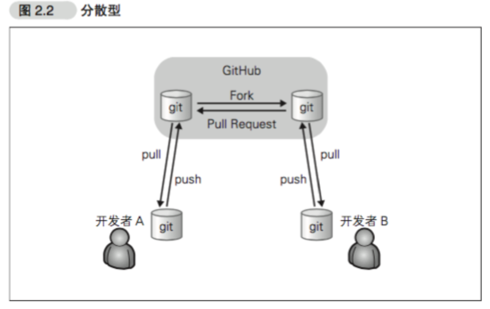
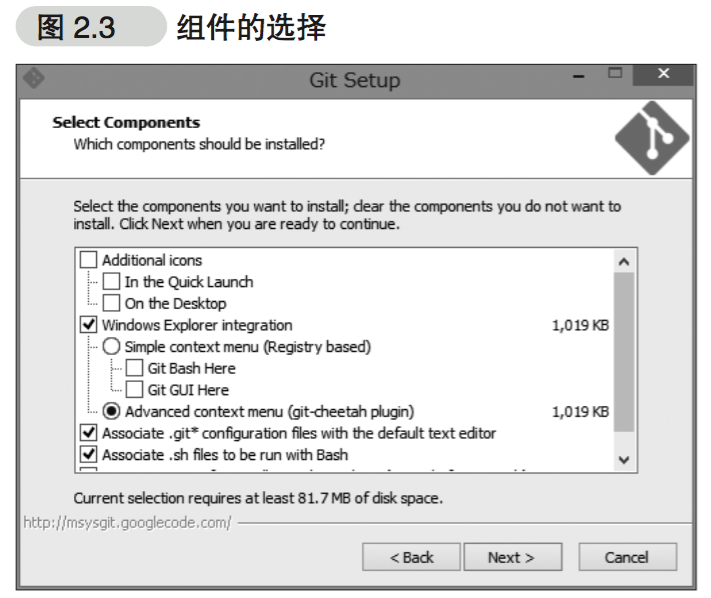
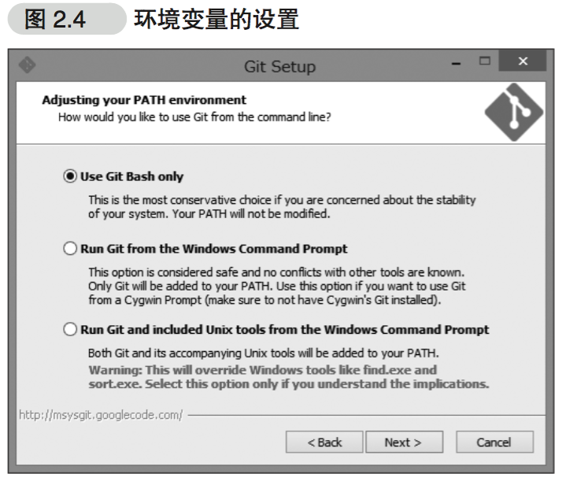
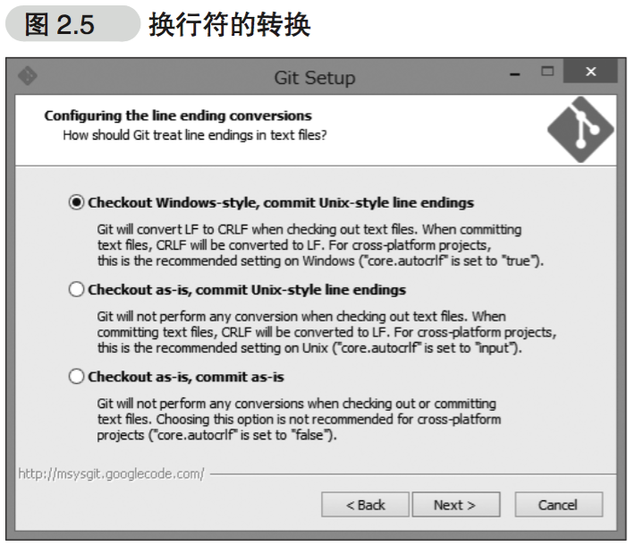
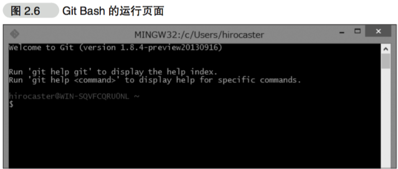

从Git的基本知识和操作方法入手，详细介绍了GitHub的各种功能，GitHub与其它工具或服务的集成，使用GitHub的开发流程以及如何将GitHub引入到企业中。
第1章 欢迎来到GitHub的世界
什么是GitHub
GitHub 是为了开发者提供Git仓库的托管服务。这是一个让开发者与朋友、同事、同学及陌生人共享代码的完美场所。
GitHub除提供Git仓库的托管服务外，还为开发者或团队提供了一系列功能，帮助其高效率、高品质地进行代码编写。
使用GitHub会带来哪些变化
协作形式变化
在开发者之间引发化学反应的Pull Request
……对特定用户进行评论
……GitHub Flavored Markdown
专栏：还可以这样写！！
GitHub中可使用的描述方法并不止”@用户名”一种。
输入”@组织名”可以让属于该 Organization(组织)的所有成员收到通知。输入”@组织名/团队”可以让该团队的所有成员收到通知。
输入”#编号”，会连接到该仓库所对应的lssue编号。输入”用户名/仓库名#编号”则可以连接到指定仓库所对应的lssue编号。只要按照这类特定格式书写便会自动创建链接。
多加利用上述这些功能，可以让交流更有效率。
能看到更多其他团队的软件
GitHub快捷的环境为开发者带来的合作伙伴，并不只局限于自己团队内部。只要将感兴趣的仓库添加至Watch中，就可以在News Feed查看该仓库的相关信息。与开源软件相同的开发模式
社会化编程
GitHub这一服务，为开源世界带来了社会化编程的概念。
如今，世界众多程序员都在通过GitHut公开源代码，同时利用GitHub支持着自己日常的软件开发。软件开发者的世界带来了真正意义上的『民主』，让所有人平等地拥有了更改源代码的权利。这在软件开发领域是一场巨大的革命。
为什么需要社会化编程
不要闭目塞听，要接触不同的文化
会写代码的程序员更受青睐
GitHub 最大的特征是”面向人”
您可以将注意力聚集到感兴趣的人身上。他既可以崇拜已久的超级黑客，也可以是同校同学或公司的同事。
能同时关注人和代码，是GitHub为我们带来的一个新的世界。
GitHub 提供的主要功能
Git 仓库
一般情况下，我们可以免费建立任意个GitHub提供的Git仓库。但如果需要建立只对特定人物或只对自己公开的私有仓库，则需要依照套餐类型支付每月7美元的使用费。Organization
通常来说，个人使用时只要使用个人账户就足够了，但如果是公司，建议使用Organization。lssue
Issue 功能，是将一个任务或问题分配给一个 Issue 进行追踪和管理的功能。Pull Request
开发者向GitHub的仓库推送更改或功能添加后，可以通过Pull Request功能向别人的仓库提出申请，请求对方合并。
第2章 Git的导入
Git 仓库管理功能是GitHub的核心。
诞生背景
Git 属于分散型版本管理系统，是为版本管理而设计的程序。
Linux 的创始人 Linux Torvalds 在2005年开发了Git的原型程序。
什么是版本管理
版本管理就是管理更新的历史记录。
集中型与分散型
版本管理系统分为Subversion 这类集中型的与 Git 这类分散型的。…… 集中型
以 Subversion 为代表的集中型，仓库集中存放在服务器之中，所以只存在一个仓库。

- …… 分散型

安装
Mac 与Linux
最近的 Mac 中都已预装了Git。而各版本的Linux中也都以软件包(Package)的形式提供给用户了。Windows
在 Windows 环境中，最简单快捷的方法是使用 msysGit 。……组件的选择
在图2.3的页面中选择需要的组件。……设置环境变量
在图2.4的页面中，可以设置调用Git的环境变量。

……换行符的处理
使用Windows环境的各位，请选择推荐的图2.5选项。
…… Git Bash
顺利安装好msysGit之后，Git Bash会作为一个应用程序添加进系统，接下来请启动它。

初始设置
- 设置姓名和邮箱地址
首先来设置使用Git时的姓名和邮箱地址。名字请用英文输入。
|
|
这个命令，会在”~/.gitconfig”中以如下形式输出设置文件
|
|
- 提高命令输出的可读性
|
|
“~/.gitconfig”中会增加下面一行。
|
|
这样一来，各种命令的输出就会变得更容易分辨。
第3章 使用GitHub的前期准备
使用前的准备
创建账户
在GitHub来创建账户设置SSH Key
1$ ssh-keygen -t rsa -C "your_email@example.com"
会在 ~/.ssh 目录下生成二个文件 id_rsa 文件是私有密钥，id_rsa.pub 是公开密钥。
– 后续完善中 –